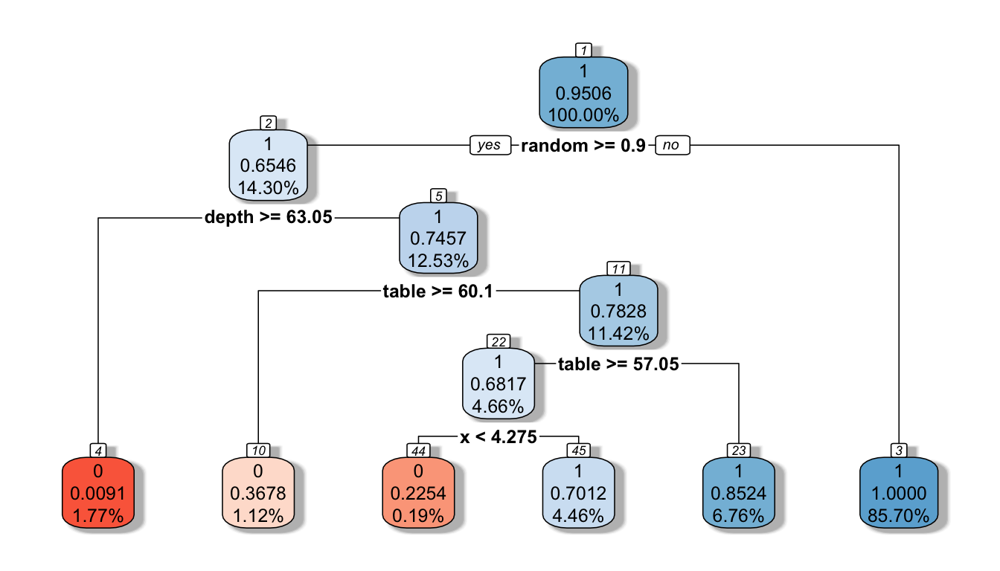
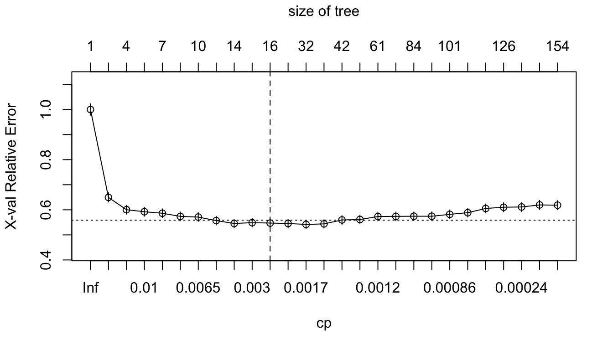

##
## 0 1
## 0.04940961 0.95059039dataset exploration
decision tree

## Call:
## rpart(formula = success ~ ., data = diamonds, method = "class")
## n= 37179
##
## CP nsplit rel error xerror xstd
## 1 0.17583016 0 1.0000000 1.0000000 0.02274794
## 2 0.05988024 2 0.6483397 0.6483397 0.01848318
## 3 0.01061513 3 0.5884594 0.5900925 0.01765957
## 4 0.01000000 5 0.5672292 0.5819271 0.01754061
##
## Variable importance
## random depth table x z carat y
## 50 35 10 2 1 1 1
##
## Node number 1: 37179 observations, complexity param=0.1758302
## predicted class=1 expected loss=0.04940961 P(node) =1
## class counts: 1837 35342
## probabilities: 0.049 0.951
## left son=2 (5318 obs) right son=3 (31861 obs)
## Primary splits:
## random < 0.9000108 to the right, improve=1087.58100, (0 missing)
## depth < 63.05 to the right, improve=1035.24300, (0 missing)
## table < 62.2 to the right, improve= 182.86980, (0 missing)
## x < 4.275 to the left, improve= 16.17553, (0 missing)
## y < 5.405 to the right, improve= 10.90541, (0 missing)
## Surrogate splits:
## depth < 63.05 to the right, agree=0.872, adj=0.107, (0 split)
## table < 62.2 to the right, agree=0.860, adj=0.019, (0 split)
## z < 6.255 to the right, agree=0.857, adj=0.000, (0 split)
## price < 338.5 to the left, agree=0.857, adj=0.000, (0 split)
##
## Node number 2: 5318 observations, complexity param=0.1758302
## predicted class=1 expected loss=0.3454306 P(node) =0.1430377
## class counts: 1837 3481
## probabilities: 0.345 0.655
## left son=4 (658 obs) right son=5 (4660 obs)
## Primary splits:
## depth < 63.05 to the right, improve=625.66900, (0 missing)
## table < 60.1 to the right, improve=115.30470, (0 missing)
## x < 4.275 to the left, improve= 43.85720, (0 missing)
## y < 4.295 to the left, improve= 32.64826, (0 missing)
## carat < 0.625 to the right, improve= 26.28056, (0 missing)
## Surrogate splits:
## z < 5.345 to the right, agree=0.878, adj=0.012, (0 split)
## carat < 2.475 to the right, agree=0.877, adj=0.003, (0 split)
## table < 51.5 to the left, agree=0.877, adj=0.003, (0 split)
## x < 3.885 to the left, agree=0.877, adj=0.003, (0 split)
## random < 0.9000166 to the left, agree=0.877, adj=0.003, (0 split)
##
## Node number 3: 31861 observations
## predicted class=1 expected loss=0 P(node) =0.8569623
## class counts: 0 31861
## probabilities: 0.000 1.000
##
## Node number 4: 658 observations
## predicted class=0 expected loss=0.009118541 P(node) =0.01769816
## class counts: 652 6
## probabilities: 0.991 0.009
##
## Node number 5: 4660 observations, complexity param=0.05988024
## predicted class=1 expected loss=0.2542918 P(node) =0.1253396
## class counts: 1185 3475
## probabilities: 0.254 0.746
## left son=10 (416 obs) right son=11 (4244 obs)
## Primary splits:
## table < 60.1 to the right, improve=130.47670, (0 missing)
## depth < 60.15 to the left, improve= 87.16630, (0 missing)
## x < 4.275 to the left, improve= 44.03174, (0 missing)
## z < 2.595 to the left, improve= 34.05343, (0 missing)
## carat < 0.295 to the left, improve= 28.86042, (0 missing)
## Surrogate splits:
## depth < 58.15 to the left, agree=0.914, adj=0.034, (0 split)
##
## Node number 10: 416 observations
## predicted class=0 expected loss=0.3677885 P(node) =0.01118911
## class counts: 263 153
## probabilities: 0.632 0.368
##
## Node number 11: 4244 observations, complexity param=0.01061513
## predicted class=1 expected loss=0.2172479 P(node) =0.1141505
## class counts: 922 3322
## probabilities: 0.217 0.783
## left son=22 (1731 obs) right son=23 (2513 obs)
## Primary splits:
## table < 57.05 to the right, improve=59.71914, (0 missing)
## depth < 62.75 to the right, improve=53.42411, (0 missing)
## x < 4.275 to the left, improve=43.09707, (0 missing)
## y < 4.295 to the left, improve=28.88683, (0 missing)
## z < 2.575 to the left, improve=28.47218, (0 missing)
## Surrogate splits:
## depth < 60.65 to the left, agree=0.660, adj=0.167, (0 split)
## y < 7.085 to the right, agree=0.609, adj=0.040, (0 split)
## x < 6.935 to the right, agree=0.608, adj=0.039, (0 split)
## carat < 1.345 to the right, agree=0.607, adj=0.037, (0 split)
## z < 4.355 to the right, agree=0.604, adj=0.030, (0 split)
##
## Node number 22: 1731 observations, complexity param=0.01061513
## predicted class=1 expected loss=0.3183131 P(node) =0.04655854
## class counts: 551 1180
## probabilities: 0.318 0.682
## left son=44 (71 obs) right son=45 (1660 obs)
## Primary splits:
## x < 4.275 to the left, improve=30.83504, (0 missing)
## depth < 62.75 to the right, improve=21.23691, (0 missing)
## carat < 0.295 to the left, improve=18.51068, (0 missing)
## y < 4.295 to the left, improve=18.39160, (0 missing)
## z < 2.595 to the left, improve=16.82683, (0 missing)
## Surrogate splits:
## y < 4.305 to the left, agree=0.985, adj=0.634, (0 split)
## carat < 0.295 to the left, agree=0.984, adj=0.620, (0 split)
## z < 2.595 to the left, agree=0.982, adj=0.563, (0 split)
## price < 383.5 to the left, agree=0.961, adj=0.042, (0 split)
##
## Node number 23: 2513 observations
## predicted class=1 expected loss=0.1476323 P(node) =0.06759192
## class counts: 371 2142
## probabilities: 0.148 0.852
##
## Node number 44: 71 observations
## predicted class=0 expected loss=0.2253521 P(node) =0.00190968
## class counts: 55 16
## probabilities: 0.775 0.225
##
## Node number 45: 1660 observations
## predicted class=1 expected loss=0.2987952 P(node) =0.04464886
## class counts: 496 1164
## probabilities: 0.299 0.701Behind the scenes rpart() is automatically applying a range of cost complexity (α values to prune the tree). To compare the error for each α value, rpart() performs a 10-fold CV (by default).
In this example we find diminishing returns after 6 terminal nodes as illustrated in Figure below
y-axis is the CV error, lower x-axis is the cost complexity (α) value, upper x-axis is the number of terminal nodes (i.e., tree size = |T|)
You may also notice the dashed line which goes through the point |T|=4. Breiman (1984) suggested that in actual practice, it’s common to instead use the smallest tree within 1 standard error (SE) of the minimum CV error (this is called the 1-SE rule). Thus, we could use a tree with 3 terminal nodes and reasonably expect to experience similar results within a small margin of error.
To illustrate the point of selecting a tree with 6 terminal nodes (or 4 if you go by the 1-SE rule), we can force rpart() to generate a full tree by setting cp = 0 (no penalty results in a fully grown tree). Figure below shows that after 4 terminal nodes, we see diminishing returns in error reduction as the tree grows deeper. Thus, we can significantly prune our tree and still achieve minimal expected error.

So, by default, rpart() is performing some automated tuning, with an optimal subtree of 6 total splits, 6 terminal nodes, and a cross-validated SSE of 0.553.
## CP nsplit rel error xerror xstd
## 1 0.17583016 0 1.0000000 1.0000000 0.02274794
## 2 0.05988024 2 0.6483397 0.6483397 0.01848318
## 3 0.01061513 3 0.5884594 0.5900925 0.01765957
## 4 0.01000000 5 0.5672292 0.5819271 0.01754061dealing with imbalance
loss matrix
You can include a loss matrix, changing the relative importance of misclassifying a default as non-default versus a non-default as a default. You want to stress that misclassifying a default as a non-default should be penalized more heavily.
Doing this, you are constructing a 2x2-matrix with zeroes on the diagonal and changed loss penalties off-diagonal. The default loss matrix is all ones off-diagonal.
penalization that is 20 times bigger when misclassifying an actual default as a non-default.
weights & costs
The weights is for rows (e.g. give higher weight to smaller class), the cost is for columns.
weights
optional case weights.cost
a vector of non-negative costs, one for each variable in the model. Defaults to one for all variables. These are scalings to be applied when considering splits, so the improvement on splitting on a variable is divided by its cost in deciding which split to choose.bagging
Bootstrapping can be used to create an ensemble of predictions. Bootstrap aggregating, also called bagging, is one of the first ensemble algorithms machine learning practitioners learn and is designed to improve the stability and accuracy of regression and classification algorithms. By model averaging, bagging helps to reduce variance and minimize overfitting. Although it is usually applied to decision tree methods, it can be used with any type of method.
## Error in library(doParallel): there is no package called 'doParallel'
## Error in library(caret): there is no package called 'caret'
## Error in library(ipred): there is no package called 'ipred'
## Error in loadNamespace(x): there is no package called 'rsample'
## Error in loadNamespace(x): there is no package called 'rsample'
## Error in loadNamespace(x): there is no package called 'rsample'The bagging() function comes from the ipred package and we use nbagg to control how many iterations to include in the bagged model and coob = TRUE indicates to use the OOB error rate. By default, bagging() uses rpart::rpart() for decision tree base learners but other base learners are available. Since bagging just aggregates a base learner, we can tune the base learner parameters as normal. Here, we pass parameters to rpart() with the control parameter and we build deep trees (no pruning) that require just two observations in a node to split.
## Error in bagging(formula = success ~ ., data = diamonds, nbagg = 10, coob = TRUE, : could not find function "bagging"One thing to note is that typically, the more trees the better. As we add more trees we’re averaging over more high variance decision trees. Early on, we see a dramatic reduction in variance (and hence our error) but eventually the error will typically flatline and stabilize signaling that a suitable number of trees has been reached. Often, we need only 50–100 trees to stabilize the error (in other cases we may need 500 or more). For the Ames data we see that the error is stabilizing with just over 100 trees so we’ll likely not gain much improvement by simply bagging more trees.
## Error in loadNamespace(x): there is no package called 'ranger'grid search
%% inspiration https://drsimonj.svbtle.com/grid-search-in-the-tidyverse %%
Training-Test Split
To help validate our hyperparameter combinations, we’ll split our data into training and test sets (in an 80/20 split):
Create the Grid
Step one for grid search is to define our hyperparameter combinations. Say we want to test a few values for minsplit and maxdepth. I like to setup the grid of their combinations in a tidy data frame with a list and cross_d as follows:
## Error:
## ! `cross_d()` was deprecated in purrr 0.2.3 and is now defunct.Note that the list names are the names of the hyperparameters that we want to adjust in our model function.
Create a model function
We’ll be iterating down the gs data frame to use the hyperparameter values in a rpart model. The easiest way to handle this is to define a function that accepts a row of our data frame values and passes them correctly to our model. Here’s what I’ll use:
Fit the models
Now, to fit our models, use pmap to iterate down the values. The following is iterating through each row of our gs data frame, plugging the hyperparameter values for that row into our model.
## Error in mutate(., fit = pmap(gs, mod)): object 'gs' not foundObtain accuracy
Next, let’s assess the performance of each fit on our test data. To handle this efficiently, let’s write another small function:
Now apply this to each fit:
## Error in mutate(., test_accuracy = map_dbl(fit, compute_accuracy, test_features, : object 'gs' not found
## Error in eval(expr, envir, enclos): object 'gs_acc' not found
## Error in rpart.plot(gs$fit[[1]], box.palette = "RdBu", shadow.col = "gray", : object 'gs' not foundbootstraping
%% inspiration https://rapidsurveys.io/learn/statistics/bootstrap/ %%
## Error in loadNamespace(x): there is no package called 'rsample'
## Error in eval(expr, envir, enclos): object 'df_bootstraping' not found
## Error in library(modeldata): there is no package called 'modeldata'
## Error in loadNamespace(x): there is no package called 'rsample'
## Error in vctrs_vec_compat(.x, .purrr_user_env): object 'resample1' not found
## Error in eval(expr, envir, enclos): object 'resample1' not found
## Error in eval(expr, envir, enclos): object 'wa_churn' not foundrandom Forest
## Error in library(ranger): there is no package called 'ranger'
## Error in library(h2o): there is no package called 'h2o'CV
perform CV directly within certain ML functions:
## Error in library(h2o): there is no package called 'h2o'
## Error in h2o.init(): could not find function "h2o.init"
## Error in loadNamespace(x): there is no package called 'AmesHousing'
## Error in loadNamespace(x): there is no package called 'h2o'
## Error in h2o.glm(x = "Lot_Area", y = "Lot_Frontage", training_frame = ames.h2o, : could not find function "h2o.glm"Or externally as in the below chunk5. When applying it externally to an ML algorithm as below, we’ll need a process to apply the ML model to each resample, which we’ll also cover.
## Error in loadNamespace(x): there is no package called 'rsample'